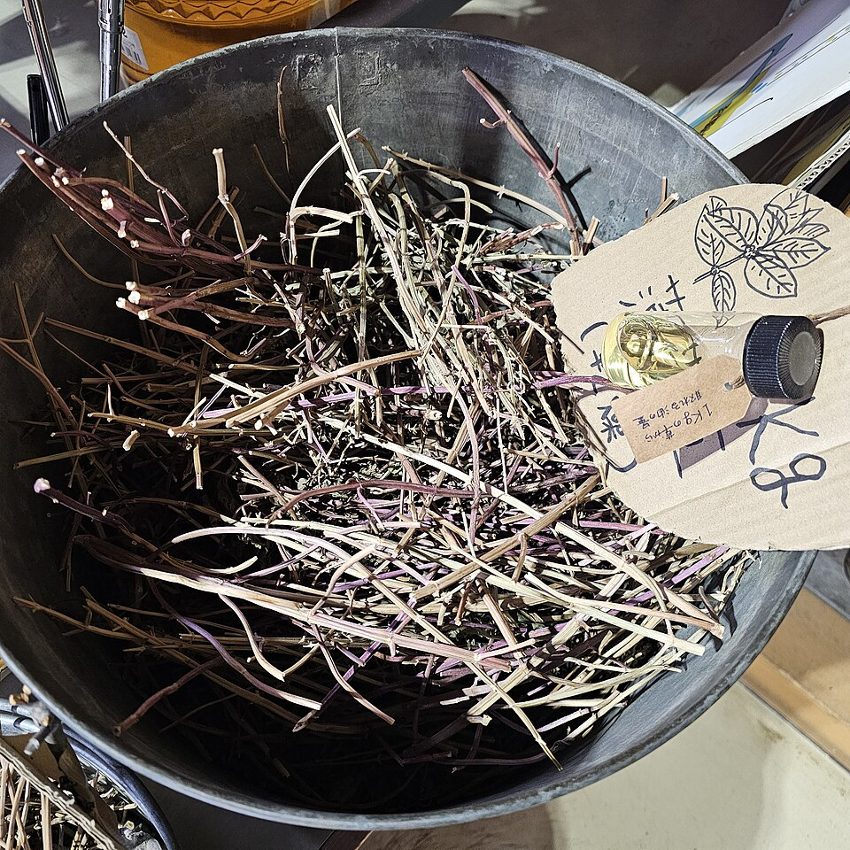

Bòhe · Chinese mint薄荷
Menthae Haplocalycis Herba · Exterior-releasing herbs: herbs that disperse wind-heatMenthae Haplocalycis Herba · 解表药·发散风热药




- Flavour · nature性味
- acrid; cool辛，凉
- Channels归经
- Lung, Liver肺、肝经
- Direction升降浮沉
- Pungent, cool and aromatic, light and ascending, dispersing upward and outward; it enters the lung to disperse wind-heat of the upper body and to clear the head, eyes and throat, and enters the liver to soothe constraint; being aromatic and rich in volatile oil, it is added late in a decoction辛凉芳香，轻扬升浮，向上向外发散；入肺经疏散上焦风热、清利头目咽喉，入肝经疏肝解郁；气味芳香，含挥发油，入煎剂宜后下
- Toxicity毒性
- Non-toxic无毒
- Dose (pharmacopoeia)用量（药典）
- 3–6 g (ceiling 6 g)（上限 6 克）
Decocted and added near the end of cooking; the aroma is volatile, so do not boil it long煎服，宜后下；芳香挥发，不宜久煎 - Pregnancy孕期
- Caution in pregnancy孕妇慎用 The pharmacopoeia and textbooks list no pregnancy restriction for Bo He, which does not mean it has been shown safe in pregnancy; the Health Canada TCMI monograph requires products containing it to be labelled not for use during pregnancy or breastfeeding. In pregnancy or while breastfeeding, ask a licensed practitioner or doctor first and do not self-treat.药典与教材未列薄荷的孕期禁忌，这不等于已证明孕期安全；加拿大卫生部 TCMI 专论要求含本品的产品标注「孕期或哺乳期勿用」。孕期、哺乳期请先问持照中医师或医生，不要自行服用。
- Health Canada加拿大卫生部
- Health Canada: monograph加拿大卫生部：有专论 The Health Canada NHPID TCMI monograph (May 29, 2026) includes Mentha canadensis (Bo he, Herba Menthae Haplocalycis) in Table 1, general medicinal ingredients; the retrieved record shows no Table 3 or Table 4 restriction. The monograph requires all products to carry these statements: do not use during pregnancy or breastfeeding; consult a healthcare professional before use if taking prescription drugs, if you have a serious condition or an acute infection; stop use and consult a healthcare professional if symptoms persist or worsen. Note that the monograph's botanical name, Mentha canadensis, is written differently from the pharmacopoeia's Mentha haplocalyx Briq., so rely on the product label.加拿大卫生部天然保健品数据库 TCMI 专论（2026 年 5 月 29 日）收录 Mentha canadensis（Bo he，Herba Menthae Haplocalycis），列于表 1（一般药用成分）；检索记录未显示表 3、表 4 的限制。专论要求所有产品标注：孕期或哺乳期勿用；服处方药、有严重疾病或急性感染者用前问医务人员；症状持续或加重即停用并就医。注意专论用的学名 Mentha canadensis 与药典的 Mentha haplocalyx Briq. 写法不同，购买时以标签为准。
- Conservation资源与保护
- Chinese mint is widely cultivated; no threatened status or international trade control found (no CITES listing seen).薄荷广泛栽培，未见濒危或国际贸易管制（未见 CITES 列名）。
- Source来源
- Mentha haplocalyx Briq.. Dried aerial parts of Mentha haplocalyx, mint familyMentha haplocalyx Briq.（薄荷）。唇形科植物薄荷的干燥地上部分
Traditional actions and indications功效与主治（传统）
🏛 Traditional statements, not efficacy claims; the modern evidence is graded further down.以下为传统说法，不是疗效主张；现代证据见下文分级。
- Disperses wind-heat疏散风热
- Clears and benefits the head and eyes清利头目
- Benefits the throat利咽
- Vents rashes透疹
- Soothes the liver and moves qi疏肝行气
Wind-heat common cold and the early stage of warm disease (fever, slight aversion to wind and cold, headache); headache and red eyes; sore throat and mouth sores; itchy wind rashes and measles that are slow to come out; chest and rib-side distension from liver qi constraint.风热感冒、风温初起（发热、微恶风寒、头痛）；头痛、目赤；咽喉肿痛（喉痹）、口疮；风疹瘙痒、麻疹透发不畅；肝郁气滞所致的胸胁胀闷。
How to recognise it怎么认
Growing植株 A perennial herb with an upright, square (four-angled) stem, usually branched; the whole plant gives off a strong, cooling mint scent when rubbed. Leaves are opposite and short-stalked, lance-shaped to oval with toothed edges and tiny oil glands on the surface. In summer and autumn whorled flower clusters appear in the leaf axils, with pale purple to whitish flowers. It likes damp, sunny ground and is mostly cultivated.多年生草本，茎直立，方形（四棱），常有分枝，全株揉搓后有浓烈清凉的薄荷香；叶对生，有短柄，叶片披针形至卵形，边缘有锯齿，叶面可见细小腺点；夏秋季叶腋处轮伞花序，花冠淡紫色或近白色。喜湿润向阳处，田间多为栽培。
Decoction pieces饮片 Short cut sections. The stem is square, purple-brown or pale green, with fine hairs on the angles, brittle, with a white hollow cut face. Leaves are opposite, mostly crushed and wrinkled, deep green above and grey-green below, with sunken oil-gland dots. Whorled flower clusters with a bell-shaped calyx and pale purple corolla may be seen. Rubbed, it gives a distinctive cooling aroma; the taste is pungent and cool.饮片为短段；茎方柱形，表面紫棕色或淡绿色，棱角处有细茸毛，质脆，断面白色、中空；叶对生，多皱缩破碎，上表面深绿色，下表面灰绿色，可见凹点状腺鳞；偶见轮伞花序，花萼钟状，花冠淡紫色。揉搓后有特异的清凉香气，味辛、凉。
No photo of the cut pieces; the dried picture shows whole stems.缺切段饮片照；现有为整株干薄荷。
Processing炮制
- Bo He (cut herb)薄荷（饮片）：: Old stems and impurities are removed, the herb is lightly sprayed with water, briefly softened, cut into short sections and dried promptly at low temperature so the volatile oil is not lost除去老茎和杂质，略喷清水，稍润，切短段，及时低温干燥，以免挥发油散失
Cautions and incompatibilities使用注意与配伍禁忌
Pharmacopoeia and textbook view: not for large single use in weak people who sweat easily; use with care in yin deficiency with dry blood and in liver yang hyperactivity (textbook view, subject to pattern differentiation). It is aromatic, pungent and dispersing, and can drain qi and induce sweating, so do not boil it long or take it for long periods. The above is the pharmacopoeia and textbook view; the pharmacopoeia lists no specific pregnancy restriction, but Health Canada requires products to be labelled not for use in pregnancy or breastfeeding.药典与教材：体虚多汗者不宜单独大量使用；阴虚血燥、肝阳偏亢者慎用（教材口径，具体以辨证为准）。芳香辛散，耗气发汗，不宜久煎、久服。以上为药典与教材口径；药典未列专门的孕期禁忌，加拿大卫生部要求产品标注孕期或哺乳期勿用。
Interactions with medicines与西药的相互作用
None of the sources retrieved for this herb (the NCCIH peppermint oil overview, the Health Canada TCMI and peppermint monographs, and two animal or lab studies of mint essential oil) gives citable evidence of interactions between Bo He (the Mentha haplocalyx herb) and specific Western drugs, so no entries are listed. This does not show that none exist. Anyone taking prescription medicines should ask a doctor or pharmacist first, as the Health Canada monograph also requires.本次检索到的来源（NCCIH 薄荷油概述、加拿大卫生部 TCMI 与薄荷专论、两篇薄荷挥发油的动物/体外研究）中，没有薄荷（Mentha haplocalyx 饮片）与具体西药相互作用的可引用依据，所以不列条目；这不等于已证明没有相互作用。正在服用处方药的人，请先问医生或药师（加拿大卫生部专论也有此要求）。
Modern research, graded现代研究（分级）
- E4 A network pharmacology and molecular dynamics study of Mentha haplocalyx essential oil (not the dried herb) offers a theoretical basis for developing anti-inflammatory agents; it is lab and computational research and does not carry over directly to the dried herb or to people.一项网络药理学与分子动力学研究以薄荷挥发油（不是饮片）为对象，认为它可作为开发抗炎制剂的理论依据；这是体外与计算层面的研究，不能直接推到饮片或人体。
- E4 Essential oil of Mentha haplocalyx showed contact toxicity to and repellency against the cigarette beetle, a stored-product pest; the authors see potential as a natural insecticide or repellent. The subject is an insect and the material is the essential oil, so it says nothing about use in people.薄荷挥发油对仓储害虫烟草甲有接触毒性和驱避作用，研究者认为可开发为天然杀虫或驱避剂；研究对象是昆虫、材料是挥发油，与人体用药无关。
In the classics古籍原文
「薄荷味辛苦温無毒主賊風傷寒發汗惡氣心腹脹滿霍亂宿食不消下氣」——神农本草经疏
Shennong Bencao Jing Shu (Miao Xiyong's Commentary)
This early entry records Bo He as pungent, bitter and warm, non-toxic, for wind-cold attacks and cold damage, inducing sweating and directing qi downward, and for distension of the chest and abdomen, cholera-like disorders and food retention. This differs from today's pharmacopoeia, which gives pungent and cool and disperses wind-heat, so keep the classical record and the current standard apart.这条早期记载把薄荷定为「辛苦温、无毒」，主「賊風傷寒」，能发汗、下气，并用于心腹胀满、霍乱、宿食不消；与今日药典「辛、凉，疏散风热」的性味并不一致，学习时要分清古代记载与现行口径。
Where it is used: the web串联：它在哪些方里、连到哪里
Later formulas (Song to Qing)时方（宋元明清）
| Formula方 | Role角色 | Dose: original / today剂量：原书／今用 | Partners in the formula同方配伍 |
|---|---|---|---|
| Saposhnikovia Sage-Inspired Powder防风通圣散 | Minister臣 | original text: see the Chinese original五钱 | Fángfēng (Saposhnikovia root)防风 · Máhuáng (Ephedra herb)麻黄 · Jing Jie (schizonepeta)荆芥 · Dàhuáng (Rhubarb root and rhizome)大黄 · Mang Xiao (mirabilite)芒硝 · Shígāo (Gypsum)石膏 · Huángqín (Baikal skullcap root)黄芩 · Lian Qiao (forsythia fruit)连翘 · Zhi Zi (gardenia fruit)栀子 · Hua Shi (talc)滑石 · Jie Geng (platycodon root)桔梗 · Chuan Xiong (Sichuan lovage rhizome)川芎 · Dāngguī (Chinese Angelica Root)当归 · Báisháo (White peony root)白芍 · Bai Zhu (white atractylodes)白术 · Gāncǎo (Licorice root)甘草 · Sheng Jiang (fresh ginger)生姜 · Cong Bai (scallion white)葱白 |
| Lonicera and Forsythia Powder银翘散 | Minister臣 | original text: see the Chinese original六钱 | Lian Qiao (forsythia fruit)连翘 · Jīnyínhuā (Japanese Honeysuckle Flower)金银花 · Jie Geng (platycodon root)桔梗 · Dan Zhu Ye (lophatherum herb)淡竹叶 · Gāncǎo (Licorice root)甘草 · Jing Jie (schizonepeta spike)荆芥 · Dan Dou Chi (prepared soybean)淡豆豉 · Niu Bang Zi (arctium fruit)牛蒡子 · Lu Gen (fresh phragmites rhizome)芦根 |
| Xanthium Powder苍耳子散 | Assistant佐 | original text: see the Chinese original此处未单独标注（与辛夷并列，下注五钱） | Xin Yi (magnolia flower bud)辛夷 · Cang Er Zi (xanthium fruit)苍耳子 · Bai Zhi (angelica dahurica root)白芷 |
| Chuanxiong Powder to be Taken with Green Tea川芎茶调散 | Assistant佐 | original text: see the Chinese original八钱 | Chuanxiong (Sichuan lovage rhizome)川芎 · Jingjie (schizonepeta)荆芥 · Qianghuo (notopterygium root and rhizome)羌活 · Baizhi (angelica dahurica root)白芷 · Gāncǎo (Licorice root)甘草 · Fángfēng (Saposhnikovia root)防风 · Xìxīn (Asarum root and rhizome)细辛 |
| Mulberry Leaf and Chrysanthemum Drink桑菊饮 | Assistant佐 | original text: see the Chinese original八分 | Kǔ Xìng Rén (Bitter Apricot Seed)苦杏仁 · Forsythia fruit clears heat and disperses wind-heat, supporting the exterior-releasing and heat-clearing strategy.连翘 · Mulberry leaf disperses wind-heat, clears the lung, and moistens dryness. It is a principal herb addressing wind-heat affecting the lung.桑叶 · Chrysanthemum disperses wind-heat, clears the head and eyes, and supports mulberry leaf in addressing the exterior wind-heat pattern.菊花 · Platycodon root disseminates lung qi, benefits the throat, and directs the formula's actions toward the upper respiratory system.桔梗（原文作苦梗） · Gāncǎo (Licorice root)甘草 · Reed rhizome clears heat and generates fluids, addressing thirst associated with heat.芦根（原文作葦根） |
| Rambling Powder逍遥散 | Assistant佐 | original text: see the Chinese original原文未注 | Cháihú (Bupleurum root)柴胡 · Dāngguī (Chinese Angelica Root)当归 · Báisháo (White peony root)白芍 · Bai Zhu (white atractylodes rhizome)白术 · Fúlíng (Poria)茯苓 · Gāncǎo (Licorice root)甘草 · Sheng Jiang (fresh ginger rhizome)生姜 |
Folk and single-herb remedies偏方、验方、单方
| Formula方 | Use用法 | Self-use能否自用 |
|---|---|---|
| Mint leaf poultice (bee or scorpion stings)薄荷叶贴敷（蜂虿螫伤） | External use外用 | Literature record only: not advised for self-use仅作文献记录，不建议自行使用 |
Patterns reached through these formulas经由这些方连到的证
Exam notes (HER)考点（HER）
HER essentials: (1) Bo He is a herb that disperses wind-heat, pungent and cool, entering the lung and liver; (2) aromatic and rich in volatile oil, so add it late in a decoction; (3) actions: disperses wind-heat, clears the head and eyes, benefits the throat, vents rashes, soothes the liver and moves qi; (4) compare with Jing Jie (pungent-warm exterior-releasing) and with Niu Bang Zi and Chan Tui in the same group; (5) not for large single use in people who are weak and sweat easily.HER 必考：①薄荷属发散风热药，性味辛凉、归肺肝经；②芳香含挥发油，入煎剂宜后下；③功效：疏散风热、清利头目、利咽、透疹、疏肝行气；④与荆芥（辛温解表）、牛蒡子、蝉蜕等同类药的功效对比；⑤体虚多汗者不宜单独大量使用。
Sources依据
- Chinese Pharmacopoeia Commission. Pharmacopoeia of the People's Republic of China, 2020 edition, vol. I国家药典委员会《中华人民共和国药典》2020 年版一部
- Zhong Gansheng (ed.). Chinese Materia Medica (national TCM higher-education textbook series)钟赣生主编《中药学》（全国中医药行业高等教育规划教材）
- Health Canada, NHPID monograph: Traditional Chinese Medicine Ingredients (TCMI), May 29, 2026 ↗
- Cui et al. Comparative Anti-Inflammatory Evaluation of Lamiaceae Essential Oils and Mechanistic Insights into Mentha haplocalyx Essential Oil via Network Pharmacology and Molecular Dynamics. J Oleo Sci. 2026 ↗
- Zhang et al. Contact toxicity and repellency of the essential oil from Mentha haplocalyx Briq. against Lasioderma serricorne. Chem Biodivers. 2015 ↗